Usando APP Control System Designer
Reparar que no Matlab version R2016b já está disponível o APP Control System Designer. Para tanto, e necessário acessá-lo na aba "APPS": 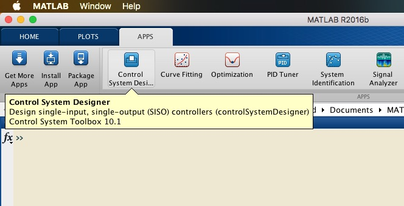
Suponha que você já carregou ou têm disponível um conjunto de plantas para realizar tesets ou projetar controladores usando este APP:
>> load testes_trabalhoII_2018_2.mat```matlabNo caso, já estão disponíveis algumas variáveis:```matlab>> whoYour variables are:FTMF_teste OS polosMF teste5 teste8b FTMF_teste8 T teste teste5b u_teste FTMF_teste8b ans teste2 teste6 u_teste8b K_teste aux teste3 teste7 zeta K_teste8 erro teste4 teste8 >> Suponha que vamos trabalhar com a planta 'teste':
>> zpk(teste)ans = 0.020833 (z-0.2) (z+0.1) ------------------------ (z-0.9) (z-0.7) (z-0.4) Sample time: 0.1 secondsDiscrete-time zero/pole/gain model.>> ```matlabNotamos que esta planta possui pólos em:```matlab>> pole(teste)ans = 0.9000 0.7000 0.4000>> e zeros em:
>> zero(teste)ans = 0.2000 -0.1000>> e possui um ganho DC em Malha-aberta aproximadamente igual à 1:
>> dcgain(teste)ans = 1.0185>> Para carregar esta planta no APP devemos fazer;
- Executar o APP: deve-se abrir uma janela como: 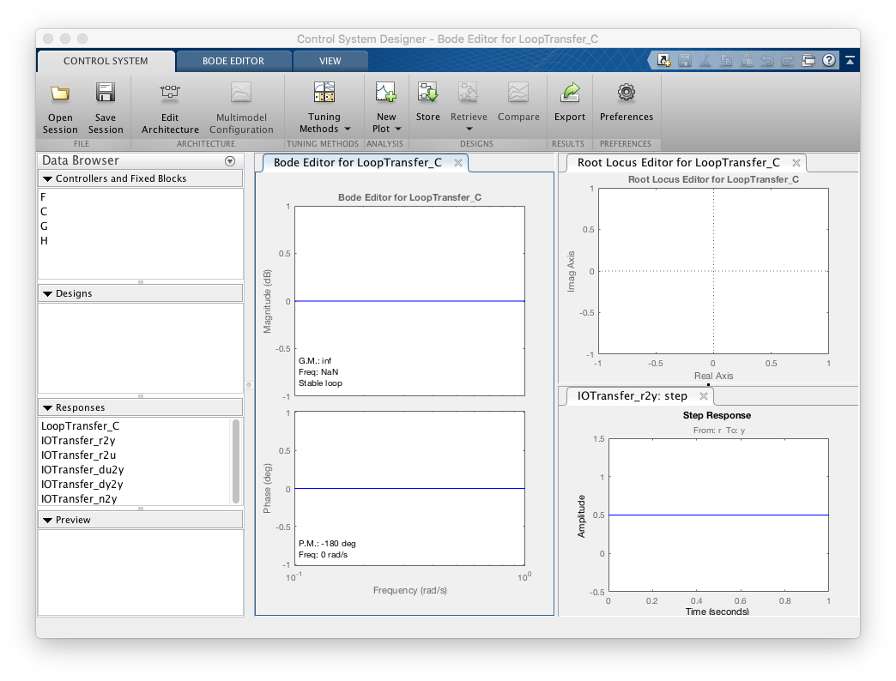
- Selecionar a opção Edit Architecture: deve-se abrir uma janela como: 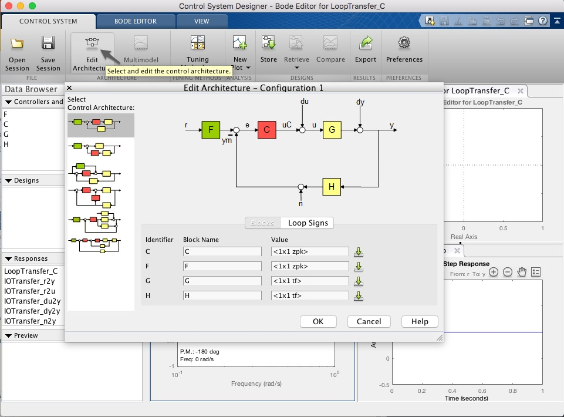
- Nesta nova janela, manter selecionado o primeiro modelo de arquitetura (como mostrado da figura anterior) e despois localizar o campo G (plant), e completar com o nome da variável que contenha a tranfer funcion desejada, no caso teste:

Ou clicar na parte referente à G no botão com a seta para baixo. Deve-se abrir uma outra janela para importação de dados à partir do Workspace, neste caso, selecionar a tf teste -- ver próxima figura:

Uma vez selecionada a tf desejada, ciclar no botão Import. E voltando à janela anterior (janela da "Edit Architecture _ Configuration 1"), clicar sobre o botão "Ok". Se tudo deu certo, a janela "Control System Designer - Bode.." deve ter se modificado para: 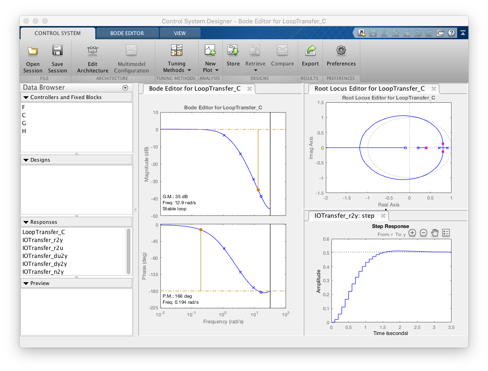 Note que o diagrama do Lugar das Raízes (RL) foi atualizado.
- O detalhe é que este APP está preferencialmente ajustado para realizar projetos usando a ferramenta de Diagramas de Bode. No nosso em caso em particular, vamos preferir usar a ferramenta RL. Para tanto, teremos que modificar as preferências, clicando na opção Preferences:
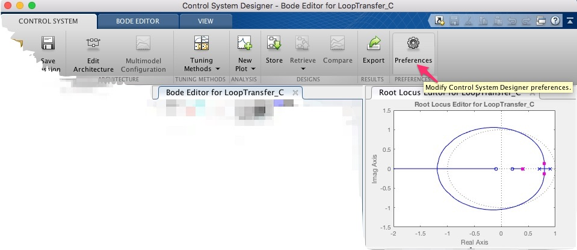
Uma nova janela se abre: 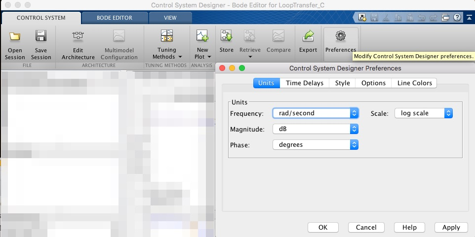
Nesta janela, selecionar a aba Options e mudar o Compensator Format do valor inicial Time Constant para Zero/pole/gain. Clicar depois no botão "Apply":

Você pode aproveitar também e modificar outras preferências associadas com o tamanho das fontes usadas originalmente nos gráficos mostrados no Control System Designer. Originalmente: 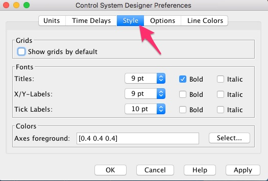
Poderia ser modificado para: 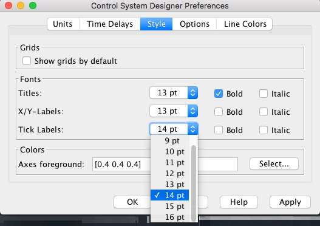 Obs.: Não esquecer de clicar em "Apply" ao final.
- A seguir, modificamos a forma com vamos projetar o controlador, no nosso caso, usando a ferramenta de RL. Para tanto, localizar a opção "Tuning_Methods" e mudar para: "Root Locus Editor": 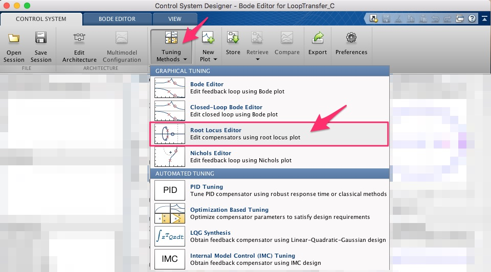 Uma nova janela se abre: 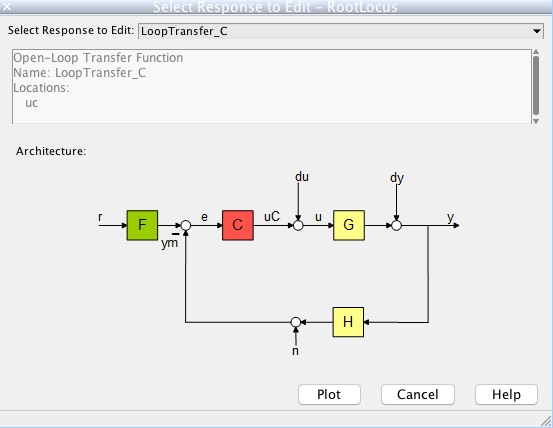 Simplemente cliclar em "Plot".
Notar então que a última janela se fecha e que o quadro que antes continha diagramas de Bode foi substituído por "Root Locus Editor or Loop Transfer C": 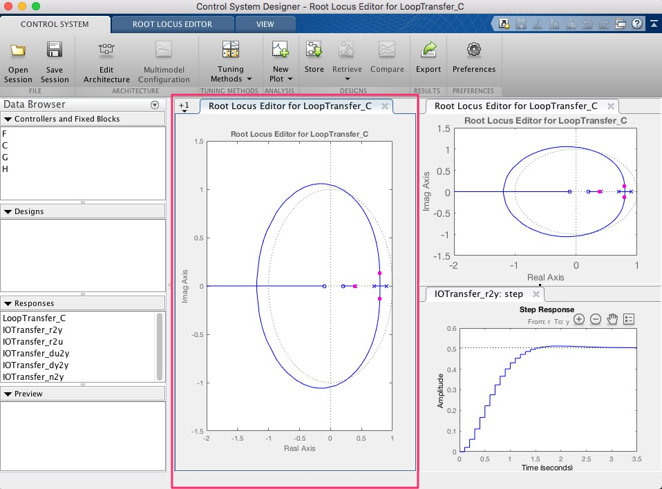
- Podemos ainda modificar/acrescentar um novo gráfico de resposta, selecionando o quadro que queremos modificar no APP. No caso, suponha que queremos modificar o quadro Root Locus Editor for LoopTransfer_C (canto direito superior) para um gráfico que mostre as amplitudes desenvolvidas pela ação de controle. Para tanto, primeiramente selecionamos este quadro (clicar sobre ele para atrair o foco para este quadro):

Uma vez tendo selecionado este quadro, clicar em New Plot e a seguir selecionar New Step: 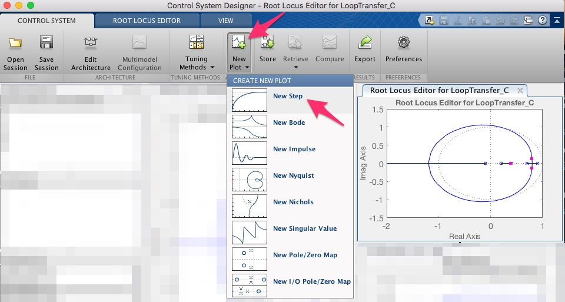
Na nova janela que se abre, selecione agora IOTransfer_r2u: 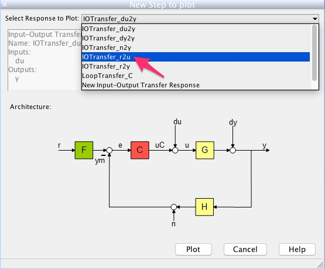
Não se esqueça de clicar em "Plot" para efetivar a seleção e fechar esta janela.
- Agora estamos quase prontos para iniciar o projeto do nosso controlador. Mas antes, seria interessante incorporar no gráfico do RL, ao menos a linha guia com fator de amortecimento desejável (requisitos para nosso controlador). Para tanto, clicar com o botão direito do mouse sobre o quadro do RL. selecionar Design Requirements e New: 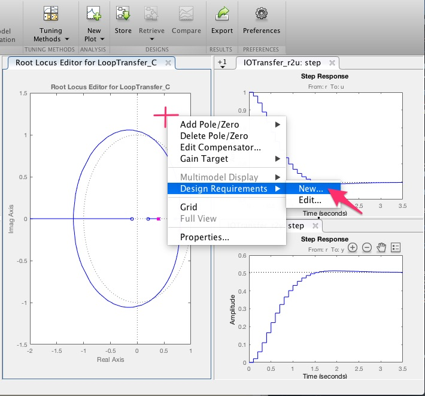
Na nova janela que se abre, clicar em Percent overshoot: 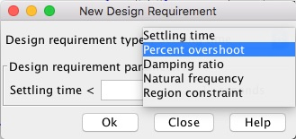
E informar o novo valor desejado para Percent overshoot (no caso: 5%):

Clicar sobre o botão "Ok" para fechar esta janela.
Note que o RL (quadro do RL) se modifica para: 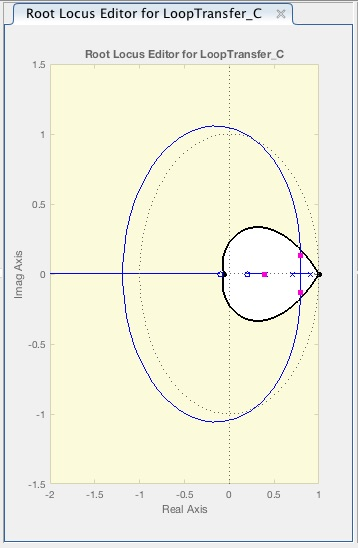
Notar que outros requerimentos podem ser informados. Por exemplo, no quadro IOTransfer_r2y:step podemos informar os requerimentos de overshoot e tempo de asentamento desejáveis. Neste caso, repetir um procedimento igual ao adotado anteriormente, mas neste caso, com foco no quadro IOTransfer_r2y:step : 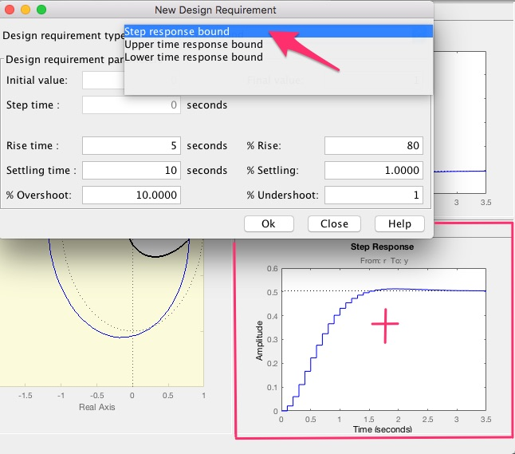
No caso, estes valores foram ajustados para:

Naturalmente, não esquecer de clicar no botão "Ok" ao final. Notar que o quadro IOTransfer_r2y:step é agora atualizado para: 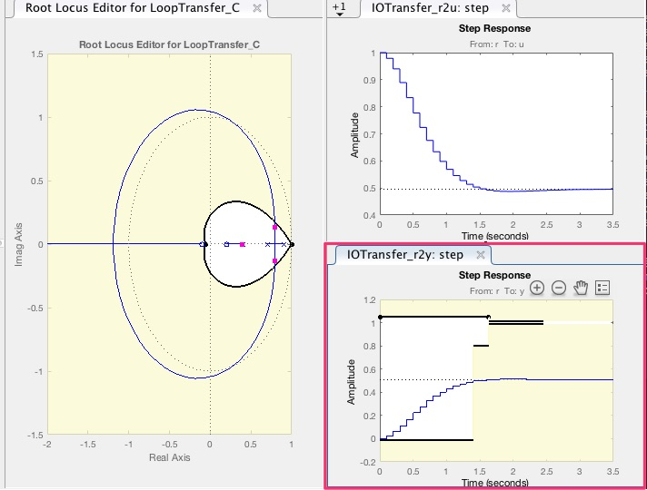
Obs.1: Reparar que o MATLAB não deixa que o valor informado no campo Settling time seja menor que o valor informado no campo Rise Time. Obs.2: Notar que no nosso caso, no WorkSpace já há as variáveis zeta e OS:
>> zetazeta = 0.5912>> OSOS = 10- Até o momento, nosso "controlador" é simplesmente proporcional com ganho unitário. A idéia é acrescentar pólos e zeros ao mesmo. Suponha que queremos realizar um PI+Zero. Para tanto, atraímos o foco do MATLAB para o quadro Root Locus Editor for LoopTransfer_C e clicamos com o botão direito do mouse sobre ele (reparar que deve ser dentro da região de interesse, área branca): 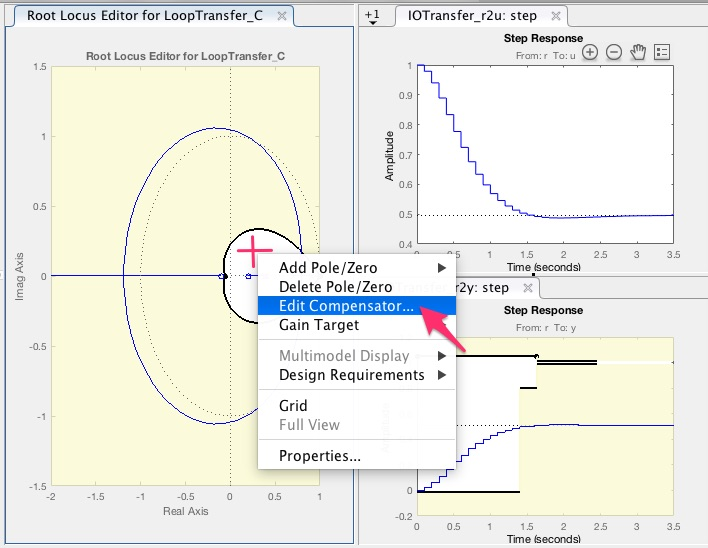
Selecionar na janela que se abre, a opção Edit Compensator e então:

Ou pode ser mais fácil, acrescentar de cara um integrador: botão direito do mouse sobre o RL e selecionar Add Pole/Zero >> Integrator: 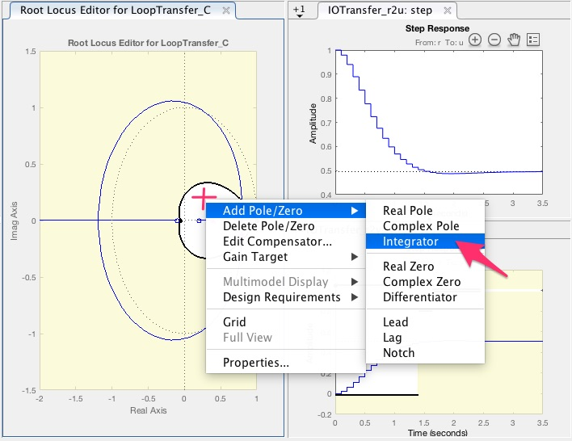
Notar que o RL e outros gráficos já se modificam retratanto o impacto causado pela introdução de um integrador (pólo em z=1) ao RL anterior: 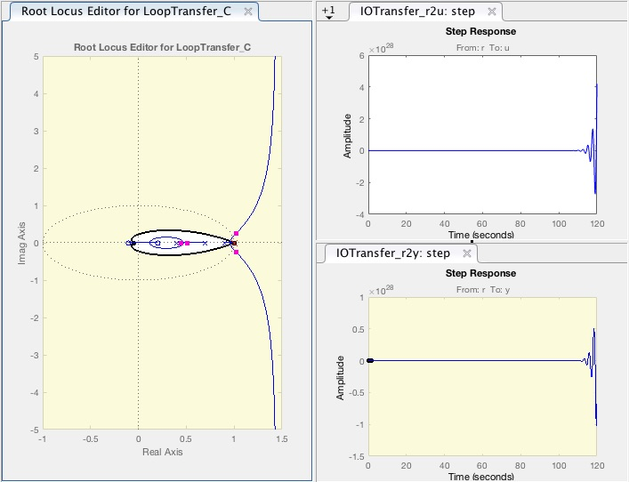
Mas faltou acrescentar o zero do controlador. Para tanto, clicar novamente com o botão direito do mouse sobre o quadro do RL e selecinar Edit Compensator: 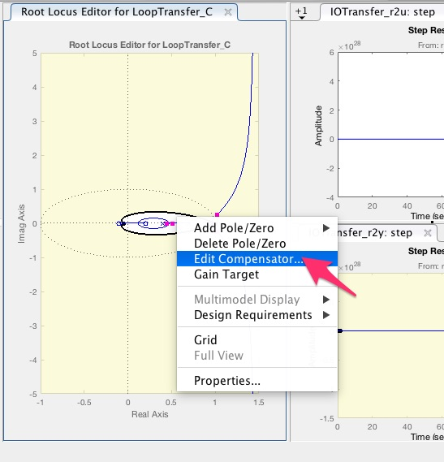
Na nova janela que se abre, clique com o botão direito do mouse sobre o quadro Dynamics, selecione Add Pole/Zero e depois Real Zero: 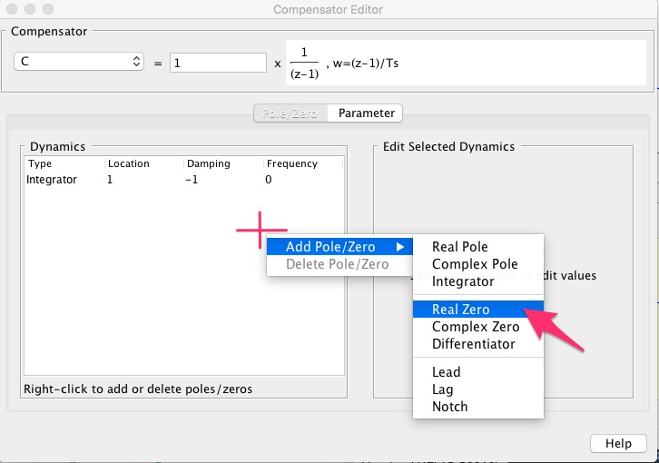
Note o MATLAB vai sugerir um valor (no caso: 0.905), mas este pode ser facilmente modificado clicando sobre a linha do Real Zero (no quadro Dynamics) e depois na caixa ao lado Edit Selected Dynamics, o valor pode ser facilmente editado:

Se percebe que novamento o gráfico do RL e das respostas ao degrau foram atualizados: 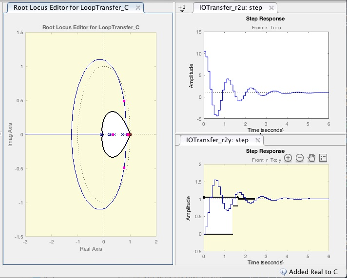
Mas eventualmente a resolução dos gráficos pode não ser a desejável para permitir visualizações ou manipulações. Para tanto, você pode clicar na aba superior do Control System Designer, chamada ROOT LOCUS EDITOR (justamente a que ativamos antes) e então a janela do APP se modifica um pouco para:

Um "Zoom" sobre o gráfico anterior resulta em:

Lembrando os dados da planta:
>> zpk(teste)ans = 0.020833 (z-0.2) (z+0.1) ------------------------ (z-0.9) (z-0.7) (z-0.4) Sample time: 0.1 secondsDiscrete-time zero/pole/gain model.>> E "lembrando" da equação do nosso controlador, clicando na janela do Control System Designer, no quadro Controllers and Fixed Blocks (canto superior esquerdo), clicamos em "C" (Controller) e então percebemos que no quadro Preview aparecem os dados do contolador:
Name: CSample Time: 0.1Value:10.508 (z-0.9048)-----------------(z-1)
Notar que o valor do ganho do controlador pode ser modificado no RL (tentar mover o pólo de MF indicado no RL como um marcador magenta quadrado -- sim, eventualmente ele pode ser difícil de ser distinguido de dentro do RL) ou abrindo a janela de edição do controlador (botão direito do mouse sobre o RL selecionando Edit Compensator): 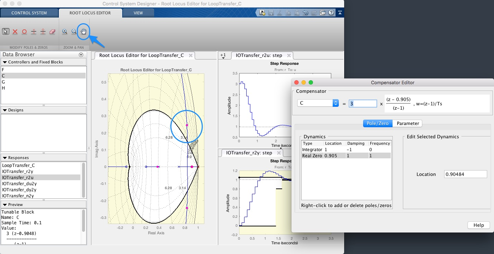
E então aqui aparece a parte mais interessante e interativa deste APP: a ferramenta da "mão" (Pan) na aba ROOT LOCUS EDITOR permite editar a posição de pólos de MF e vizualizar interativamente, seu efeito sobre o sistema em malha fechada:

(Arquivo fonte original: uso_control_system_designer.mp4, 960 x 734, H.264, 00:23, 2.1 Mbytes ou no Youtube):
Prof. Fernando Passold, em 08 Oct 2018.